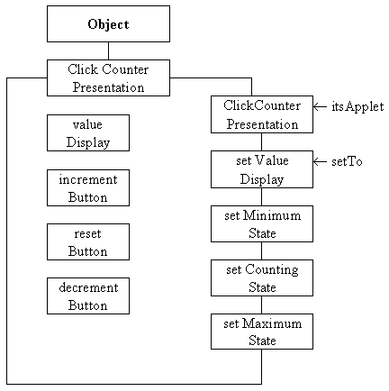
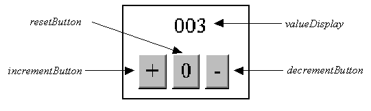
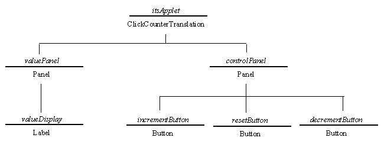
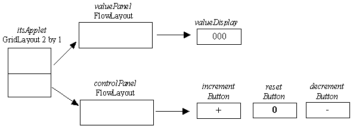

The most obvious of the three classes is the ClickCounterPresentation class and so will be described first. The class diagram of the ClickCounterPresentation class is given in Figure 1.9.

Figure 1.9 ClickCounterPresentation class diagram.
The diagram indicates that the class encapsulates the four visual components illustrated on the state transition diagram in Figure 1.5: the valueDisplay, the incrementButton, the resetButton and the decrementButton. The ClickCounterPresentation constructor is responsible for creating these components and mounting them within the ClickCounterTranslation instance's window, identified as itsApplet, passed as an argument. The setValueDisplay() method will change the value shown in the valueDisplay to that passed in its setTo argument. The three remaining methods: setMaximumState(), setCountingState() and setMinimumState() are all concerned with setting the sensitivities of the three buttons as required by the STD.
In order for the constructor to be implemented the detailed visual design of the application's interface has to be produced. The visual appearance of the ClickCounter interface, identifying the names of the components, is illustrated in Figure 1.10.

Figure 1.10 The ClickCounter interface - physical appearance.
This diagram indicates that the interface will require four obvious components: the three Buttons at the bottom and the valueDisplay at the top. What is not so obvious is that there is also an area upon which these components are mounted, the Applet's area. Even less obviously the buttons will have to be mounted upon their own area and the valueDisplay upon its own area, both of which are subsequently mounted on the Applet's area. The reasons for these seemingly convoluted considerations are concerned with controlling the layout of the application and a full explanation will be given in Chapter 3.
In Chapter 2 a description and an illustration of every simple user interface component which is supplied by Java will be given. For the time being the reasons why some of the following decisions have been made will have to be taken largely on trust.
The area upon which all other components are mounted will be the application object itself which is an extended Applet component. The two areas upon which the valueDisplay and the buttons are mounted will be Panel objects. The valueDisplay will be implemented as a Label object and the three buttons Button objects. The relationships between these components is given in Figure 1.11.

Figure 1.11 The application instance component hierarchy.
A diagram such as this, which illustrates the parent/ child relationships of the component instances required to construct an interface, is known as an instance component hierarchy. When the application is constructed it will have to create each of the components and connect them together using the relationships shown.
The root of the hierarchy, at the top of the diagram, is identified as itsApplet and is shown to be an instance of the ClickCounterTranslation class, passed to the ClickCounterPresentation constructor as an argument. The implementation of the ClickCounterPresentation class, as far as the start of the constructor, is as follows.
0001 // Filename ClickCounterPresentation.java.
0002 // Provides an interactive interface for the ClickCounter
0003 // class. Written for the Java Interface book Chapter 1.
0004 //
0005 // Fintan Culwin, v 2.0, August 1997.
0006
0007 import java.awt.*;
0008 import java.applet.*;
0009 import java.awt.event.*;
0010
0011
0012 public class ClickCounterPresentation extends Object {
0013
0014 private Button incrementButton;
0015 private Button resetButton;
0016 private Button decrementButton;
0017 private Label valueDisplay;
The classes imported on lines 0007 to 0009 are required to provide easy access to the AWT, Applet and event facilities respectively. On lines 0014 to 0017 the four interface objects identified from the instance hierarchy in Figure 1.11 are declared, but not constructed. As indicated in Figure 1.7, the interactive interface components, in this interface the three Buttons, need to know the identity of the object which will listen to the events which they generate. In this implementation this will be the client program object which, as noted in Figure 1.8, implements the ActionListener interface to allow it to do this. The source code implementing the ClickCounterPresentation continues with the constructor, as follows.
0022 public ClickCounterPresentation( ClickCounterTranslation itsApplet) {
0023
0024 Panel valuePanel = new Panel();
0025 Panel controlPanel = new Panel();
0026
0027 itsApplet.setLayout( new GridLayout(2, 1, 10, 10));
0028
0029 valueDisplay = new Label();
0030 valuePanel.add( valueDisplay);
0031 itsApplet.add( valuePanel);
0032
0033 incrementButton = new Button( "+");
0034 incrementButton.setActionCommand( "increment");
0035 incrementButton.addActionListener( itsApplet);
0036
0037 resetButton = new Button( "0");
0038 resetButton.setActionCommand( "reset");
0039 resetButton.addActionListener( itsApplet);
0040
0041 decrementButton = new Button( "-");
0042 decrementButton.setActionCommand( "decrement");
0043 decrementButton.addActionListener( itsApplet);
0044
0045 controlPanel.add( incrementButton);
0046 controlPanel.add( resetButton);
0047 controlPanel.add( decrementButton);
0048 itsApplet.add( controlPanel);
0049 } // End ClickCounterPresentation constructor.
The two remaining components from the instance diagram in Figure 1.11, the valuePanel and the controlPanel, are declared and constructed on lines 0023 and 0025. Knowledge of these components is only required as the interface is constructed and so, in accordance with the principle of keeping declarations as limited as possible, they are provided as local declarations of the constructor. Although these variables will be destroyed when the call of the constructor finishes the Panels which they reference will continue to exist within the application's interface until it is destroyed, when the applet is destroyed.
The Applet class is an extension of the Panel class, and the Panel class is an extension of the Container class. The Container class introduces the capability to control the layout of its instance children into the AWT hierarchy. Thus Panel and Applet instances are extended Container instances and so inherit the capability to position their children. The relationships between the components in the AWT hierarchy, and their capabilities, will be explained in detail in the two following chapters.
There are several different possible policies for controlling the positioning of a Container's children, and the Container.setLayout() method can be used to indicate which style of layout control is to be used. On line 0027 the setLayout() method of the extended Applet instance, passed as an argument to the constructor, is specified as a GridLayout. The arguments to the GridLayout constructor indicate that it can contain two children in a 2 row by 1 column pattern, each separated from each other by 10 pixels in the horizontal and vertical directions.
The default layout for a Panel is a FlowLayout where the child components are laid out from left to right in the order in which they are added to the parent, and centered within the available space. As this layout is suitable for the valueDisplay and for the three buttons the setLayout() method of the valuePanel and controlPanel Panels need not be called.
On line 0029 an instance of the AWT Label class is constructed and assigned to the instance attribute valueDisplay. The constructor does not specify the text which it is to display although an initial text will be supplied before it becomes visible, as will be explained below. On line 0030 the valueDisplay Label is added to the valuePanel using its add() method, establishing the parent child relationship shown on the instance hierarchy in Figure 1.11. Once this has been accomplished, the valuePanel is added to itsApplet parent, to establish the relationship between the valuePanel and itsApplet also shown on the instance hierarchy diagram. The children of a Container which has a GridLayout style are positioned in a left-right, top-down manner in the sequence in which they are added. Thus the valuePanel will placed at the top of itsApplet's window as required by the visual design shown in Figure 1.10.
On line 0033 the incrementButton is constructed, the argument to the Button constructor specifying the text ("+") which it is to display. Once constructed, on line 0034, the actionCommand resource of this Button instance is specified as "increment" and on line 0035 the actionListener resource is specified as itsApplet. The actionListener resource, specified by using the addActionListener() method, determines which object events generated by the Button will be sent to. As all three of the buttons in this example will be using the same ActionListener destination the actionCommand resource, specified by using the setActionCommand() method, is required to indicate exactly which of the buttons was pressed.
On lines 0037 to 0039 a similar sequence of steps constructs and configures the resetButton and on lines 0041 to 0043 the same is done for the decrementButton. Having constructed all three buttons they are added to the controlPanel on lines 0045 to 0047. A Panel has by default a FlowLayout layout policy which will position its children centrally from left to right in the sequence in which they are added. Finally, on line 0048 the controlPanel is then added to the itsApplet taking up the second cell below the valuePanel which has already been added. These layout relationships are illustrated in Figure 1.12.

Figure 1.12 Layout management of the ClickCounter application.
The remaining methods of the ClickCounterPresentation class are concerned with changing the appearance of the interface in response to the user's actions, and as it moves between states. The implementation of these methods is as follows.
0056 public void setValueDisplay( String setTo) {
0057 valueDisplay.setText( setTo);
0058 } // End setValueDisplay.
0059
0060
0061 public void setMinimumState() {
0062 incrementButton.setEnabled( true);
0063 resetButton.setEnabled( false);
0064 decrementButton.setEnabled( false);
0065 } // End setMinimumState.
0066
0067 public void setCountingState() {
0068 incrementButton.setEnabled( true);
0069 resetButton.setEnabled( true);
0070 decrementButton.setEnabled( true);
0071 } // End setCountingState.
0072
0073 public void setMaximumState() {
0074 incrementButton.setEnabled( false);
0075 resetButton.setEnabled( true);
0076 decrementButton.setEnabled( true);
0077 } // End setMaximumState.
0078
0079 } // End class ClickCounterPresentation.
The setValueDisplay() method uses the valueDisplay setText() method to set the text displayed by the Label to that supplied in the setTo argument. The three remaining methods use the setEnabled() method of each Button instance to ensure that the button is enabled (true) or disabled (false) as required by the state transition diagram in Figure 1.5.
1.5 The ClickCounterTranslation class
1.3 Application, presentation and translation implementation